{kind=link}

Jon Cooper
Fengari allows lua to be used as a web-scripting language i.e. we can use lua instead of javascript (JS) to control the behaviour of our web pages and we have access to all of the available JS libraries.
To run fengari, you need to download the file fengari_web.js from the src folder here . Note that I have renamed it so that the hyphen in the original file name is replaced by an underscore to stop linux being confused, since the hyphen can be interpreted as a shell command option. It's probably best to use Chrome and in the drop-down settings menu go to More Tools and then Developer Tools where you can select the Chrome Console , which shows you any errors and printed output from the scripts.
Traditionally a job for JS e.g. as introduced here , we can achieve the same thing with lua and fengari. Looking at the JS examples in the link, we can convert these commands to lua with some swapping around of dots and colons. The example below draws concentric circles of random radius on the canvas, a new circle appearing every 100 milliseconds.
<html><head><title>Draw on html canvas</title></head><body>
<div><canvas id="myCanvas" width="400" height="400" style="background-color:white;"></canvas></div>
<script src='fengari_web.js' type="text/javascript" async></script>
<script type="application/lua" async>
local js = require "js"
local window = js.global
local document = window.document
canvas_width=400 canvas_height=400 centre_x=canvas_width/2 centre_y=canvas_height/2
shape=document:getElementById("myCanvas")
ctx=shape:getContext("2d")
ctx.lineWidth=2
function draw_shape()
radius=math.random(1,200)
ctx:beginPath()
ctx:arc(centre_x, centre_y, radius, 0, 6.3)
ctx.strokeStyle="dodgerblue"
ctx:stroke()
end
window:setInterval(draw_shape, 100)
</script></body></html>
The output is animated but a snapshot of it looks something like this:
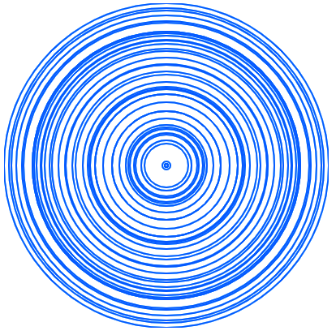
An explanation of the lua code is given below.
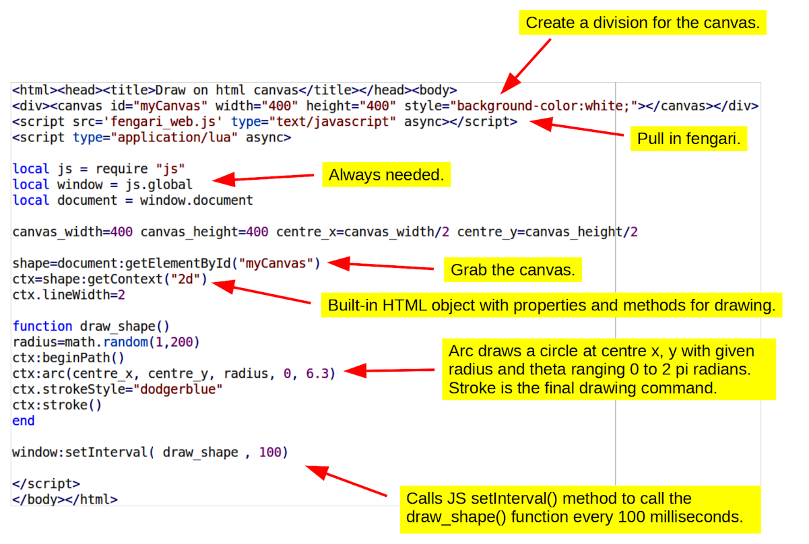
The numerous other drawing methods of the canvas can thus be accessed through fengari. Note that a small minority of these methods need parameters to be given as a JS array. JS arrays are of the form: [12, 3, 3] and this one could, for example, be created with fengari using the command window:Array(12, 3, 3) . An array containing a single text element is created in the example below.
<html>
<legend>Enter some text</legend> <textarea></textarea>
<div><button id="save">Save text to file</button></div>
<script src='fengari_web.js' type="text/javascript" async></script>
<script type="application/lua" async>
local js = require "js"
local window = js.global
local document = window.document
savebutton=document:getElementById("save")
savebutton:addEventListener("click", function() save() end)
function save()
textArea=document:querySelector("textarea")
print(textArea.value)
a=document:createElement("a")
content=window:Array(textArea.value)
contentType=js.new(window.Object)
contentType["type"]="text/plain"
savefile=js.new(window.Blob,content,contentType)
a.href=window.URL:createObjectURL(savefile)
a.download="jim.txt"
a:click()
window.console:log(a)
window.URL:revokeObjectURL(a.href)
end
</script></html>
The html above generates a very simple form in which one can enter text and save it to a local file ( jim.txt ).
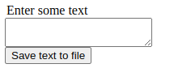
Here is some explanation of what the lua script does.
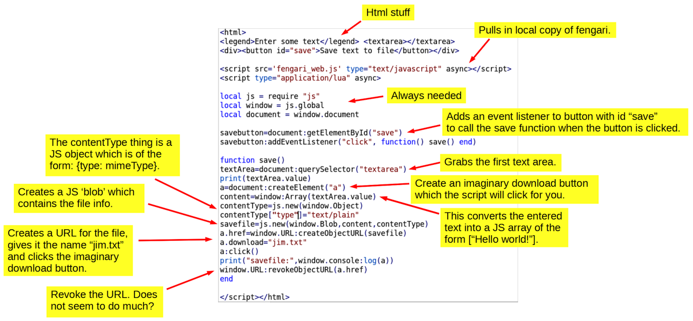
Note that in the line:
savebutton:addEventListener("click", function() save() end)
we could have said simply:
savebutton:addEventListener("click", save)
as in Example 1 and this would work fine, too. However by wrapping the function in a function we can add other lua commands and extra functions to the button's callback, if needed, e.g.
savebutton:addEventListener("click", function() save() print("Done") end)
For this reason, we will stick to this slightly longer wrapped format for the remaining examples.
In this example, in addition to making a JS array, we also made a JS object. JS objects are of the form: car = {type:"Fiat", model:"500", color:"white"} so we could make the same thing with lua and fengari using the following commands:
car=js.new(window.Object)
car["type"]="Fiat"
car["model"]="500"
car["color"]="white"
In JS you can print the contents of an object by using the console.log(object_name) command. However, in lua we need to use the following syntax instead.
window.console:log(object_name)
For example, with the car object above, the command window.console:log(car) would give us the following information about it in the Chrome console.
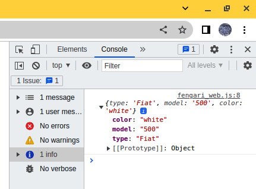
The following code makes a simple file chooser button, as shown beneath the code box:
<html>
<legend>File contents</legend> <textarea></textarea>
<div><input type="file" id="file"></div>
<script src='fengari_web.js' type="text/javascript" async></script>
<script type="application/lua" async>
local js = require "js"
local window = js.global
local document = window.document
fileChooser=document:getElementById("file")
fileChooser:addEventListener("change", function() read() end)
textArea=document:querySelector("textarea")
function read()
myFile=fileChooser.files[0]
print(myFile.name)
reader=js.new(window.FileReader)
reader.onload=function() textArea.value=reader.result end
reader:readAsText(myFile)
window.console:log(reader)
end
</script></html>
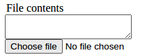
This allows us to select a local text file and display its contents in the web page, e.g. in the picture below, we have chosen a random file called miller.txt . Of course, we may need to resize the text area by clicking and dragging in the lower right corner to display the entire file.
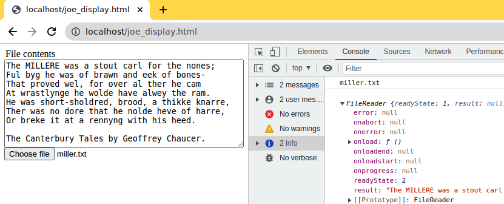
An explanation of the code is given below.
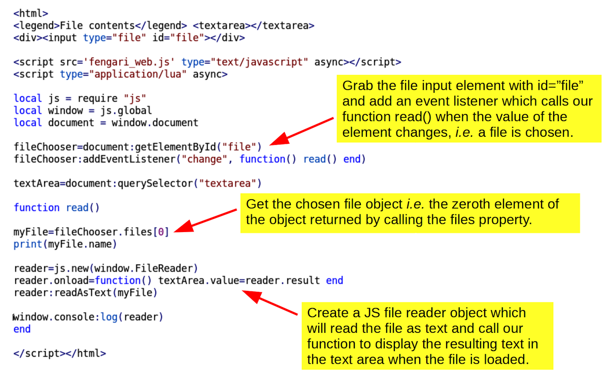
Often you want to have a web form with a submit button that starts a client-side process and while this is running we want to disable the form and display an hourglass to inform the user that things are happening in the background. In this example we use an animated gif ( hourglass.gif ) which must first be downloaded from the link here to your working directory. The lua script in the html file looks like this:
<html><legend>Choose a time (s)</legend>
<input type="number" min="2" max="12" value="2" step="2" id="timer">
<button id="run">Run</button><div id="info" style="height:100px;"></div>
<script src='fengari_web.js' type="text/javascript" async></script>
<script type="application/lua" async>
local js=require "js"
local window=js.global
local document=window.document
info=document:getElementById("info")
runButton=document:getElementById("run")
runButton:addEventListener("click", function() start() end)
function start()
runTime=document:getElementById("timer")
runTime=1000*runTime.value
runButton.disabled=true
info.style.backgroundImage="URL(hourglass.gif)"
info.style.backgroundRepeat="no-repeat"
window:setTimeout(function() stop() end, runTime)
end
function stop()
runButton.disabled=false
info.style.background="none"
end
</script></html>
It gives us a mini-form as follows:
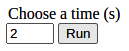
and when running it looks like this:
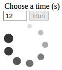
Note that the run button is disabled while the background process is running. An explanation of the code is given below.
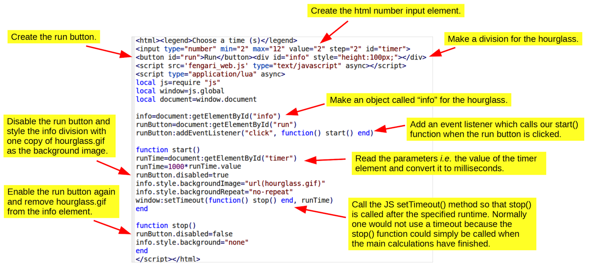
This example will illustrate how to draw highly interactive graphs in a web page using the plotting tool Plotly . Imagine that we want to draw a bar chart showing the number of trees of different types in a small wood. The data are as follows: oak: 6, yew: 2, beech: 8, lime: 4, etc. In the code below you will see in the lua comments that Plotly has fairly complex data structures i.e. you need to assemble the data and plotting instructions into nested objects and arrays but this can be done fairly easily with lots of short commands, some of which I have put side-by-side on the same line.
<html>
<div id="myCanvas"></div>
<script src='fengari_web.js' type="text/javascript" async></script>
<script src="https://cdn.plot.ly/plotly-latest.min.js"></script>
<script type="application/lua" async>
local js = require "js"
local window = js.global
--Need JS data array: [{x: ['Oak', 'Yew',...], y: [6, 2,...], type: 'bar', marker: {color: 'green'}}]
trees=window:Array("Oak","Yew","Beech","Lime","Walnut","Ash","Poplar","Birch")
number=window:Array(6,2,8,4,1,4,0,12)
chart=js.new(window.Object)
chart.x=trees
chart.y=number
chart.type="bar"
marker=js.new(window.Object)
marker.color="green"
chart.marker=marker
data=window:Array(chart)
--Need JS layout object: {title: '...', font: {family: 'Arial', size: 18, color: 'green'}}
font=js.new(window.Object) font.family="Arial" font.size=18 font.color="green"
layout=js.new(window.Object) layout.font=font layout.title="Number of trees by species"
window.Plotly:newPlot("myCanvas", data, layout)
</script><html>
Anyway, the result is quite nice and, as you can see below, Plotly provides little on-screen tools for zooming and panning the graph, etc. , which will impress the users of your web site!
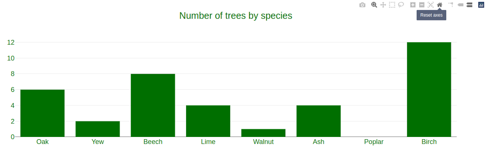
An annotated version of the code is given below.
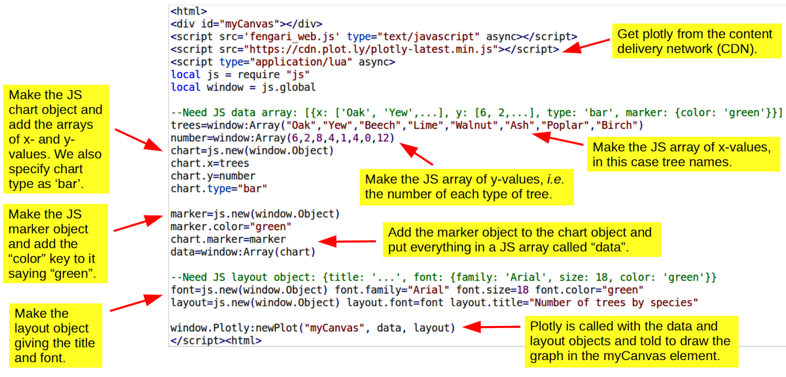
Drawing 3D objects generally requires lots of code but three.js simplifies things considerably, although in the example below I still had to combine quite a few lines together to keep everything within one page. However, the commands are grouped together logically, I hope, to indicate roughly the process of rendering a scene, which in this case is a rolling wireframe sphere.
<html> <button id="run">Run</button> <button id="stop">Stop</button> <div id="myCanvas"></div> </html>
<script src='fengari_web.js' type="text/javascript" async></script>
<script src="https://cdnjs.cloudflare.com/ajax/libs/three.js/r128/three.min.js"></script>
<script type="application/lua" async>
local js=require "js" local window=js.global local threejs=window.THREE local document=window.document ang=0
canvas=document:getElementById("myCanvas") width=window.innerWidth height=window.innerHeight ratio=width/height
renderer=js.new(threejs.WebGLRenderer) renderer:setSize(width,height) canvas:appendChild(renderer.domElement)
camera=js.new(threejs.PerspectiveCamera,40,ratio,1,100) camera.position.z=40
light=js.new(threejs.PointLight) light.position:set(20,30,40)
material=js.new(threejs.MeshBasicMaterial) material.color:set("green") material.wireframe=true
material.wireframeLinewidth=2 material.opacity=.7 material.transparent=true
geometry=js.new(threejs.SphereGeometry,10,12,12)
mesh=js.new(threejs.Mesh, geometry, material)
scene=js.new(threejs.Scene) scene:add(camera) scene:add(light) scene:add(mesh)
renderer:render(scene,camera) renderer:setAnimationLoop(function() roll() end)
function roll() ang=ang+0.006 rot=mesh.rotation rot.x=ang rot.y=ang rot.z=ang renderer:render(scene, camera) end
function run() renderer:setAnimationLoop(function() roll() end) end
function stop() renderer:setAnimationLoop() end
runbutton=document:getElementById("run") runbutton:addEventListener("click", function() run() end)
stopbutton=document:getElementById("stop") stopbutton:addEventListener("click", function() stop() end)
</script>
The actual animation looks something like this which may not be very impressive as a still image, but it is quite hypnotic when animated. There are two html buttons (not shown) which are coded to turn the animation on or off.
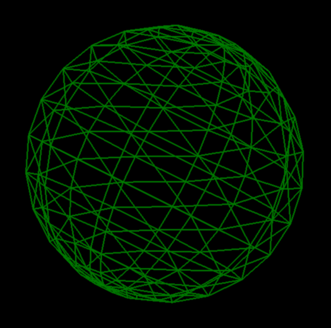
The rendering process ( i.e. drawing, painting or photographing the scene computationally) consists of defining a camera and a light source in a 3D coordinate system, as shown here . We must also specify the material of the object being 'photographed' and its geometry - roughly speaking its shape. The program calculates a mesh which is like a polygon model of the object's surface, based on its geometry and the chosen material. In the language of three.js, we create a scene and add the camera, light and mesh to it before issuing a final command to render the scene . Of course it is insanely complicated and I can only pretend to understand it, but I have annotated the main steps below.
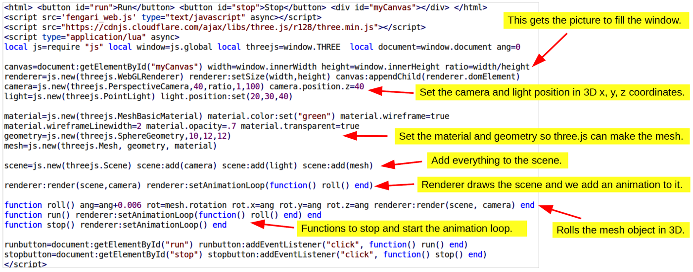
Depth cueing . One more thing about this example is that the 3D effect can be enhanced significantly by adding a fog to the scene. This is done by inserting the following line in the script just below the scene command.
scene.fog=js.new(threejs.Fog,"black", camera.position.z-15, camera.position.z+15)
In this case the fog starts at 15 distance units before the origin of the sphere (which has a radius of 10 units) and reaches full thickness 15 distance units behind.
In this example we will use webhook which is a website specifically for testing post and get transfers. We can easily set up a temporary URL and any data we send to it will appear in the corresponding web page. The example code below contains the temporary URL that I set up for this tutorial so you will need to set up your own and transfer data to that instead by altering the http address in the script accordingly. Keep the webhook URL open in one browser tab and load the script in another. N.B. With some browsers ( e.g. Chrome) this example only works properly if you tick the "CORS Headers" box, as shown highlighted in the screenshot of the webhook site a few paragraphs down.
The purpose of this example is to demonstrate that some JS processes are allowed to be asynchronous, i.e. they start and run at their own speed, independently of the rest of the code. The reason for this is that some processes, such as transferring data to or from a web server, take a finite amount of time to complete, so there is not much point holding up the rest of the script while this is happening. However, if the script needs to process data after it has been received then it must, of course, wait for the transfer to complete. JS allows for this with 'promises' e.g. the JS fetch method which we use in the below example to post data to an external server returns a promise which, assuming no errors occur, will either be 'pending' during the transfer or 'fulfilled' once the transfer is complete. JS promises have a then method which is executed when the promise is fulfilled and, as shown below, we can attach a lua function to this which will run only when the transfer is complete.
<html><head><title>Javascript promises</title></head><body>
<div id="info1"></div><div id="info2"></div><div id="info3"></div>
<script src='fengari_web.js' type="text/javascript" async></script>
<script type="application/lua" async>
local js=require "js"
local window=js.global
local document=window.document
fetchObject=js.new(window.FormData)
fetchObject.method="POST"
fetchObject.body="The MILLERE was a stout carl for the nones; Ful byg he was of brawn and eek of bones- That proved wel, for over al ther he cam At wrastlynge he wolde have alwey the ram. He was short-sholdred, brood, a thikke knarre, Ther was no dore that he nolde heve of harre, Or breke it at a rennyng with his heed. The Canterbury Tales by Geoffrey Chaucer."
--Send data to a remote server using JS fetch which is asynchronous. It returns a 'fulfilled promise' when finished.
fetchpromise=window:fetch("https://webhook.site/d0141503-e6da-4b3a-8720-af5906e4af3e",fetchObject) -- copy and paste the URL from webhook
fetchpromise["then"](fetchpromise, function() post_completed() end) --override lua's own then command
function post_completed() --This function only runs when the promise is 'resolved' i.e. the data is sent.
document:getElementById("info2").innerHTML="I waited for the post request to finish.<p>"
document:getElementById("info3").innerHTML="To check it worked visit: https://webhook.site"
end
--This last part of the code finishes before the post request finishes, even though it is started afterwards!
document:getElementById("info1").innerHTML="The first shall be last and the last shall be first (Matthew 20:16).<p>"
</script></body></html>
One issue with the JS promise then() method is that in lua the word "then" has its own meaning in the familiar "if then" statement for logical tests. However, lua's syntax can be overridden locally as shown in the line beginning fetchpromise["then"]... to provide a "then" method, which in this case is the lua function post_completed() . Some more notes on the code are provided below.
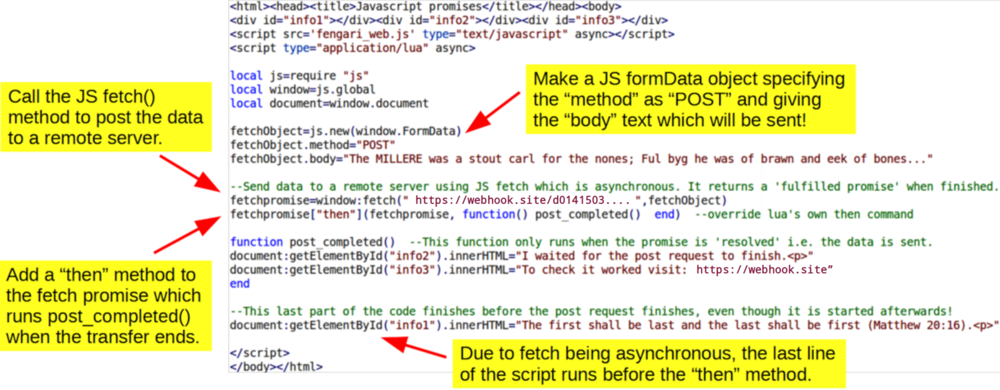
In a web browser the script loads as follows and if you copy and paste the web address which is underlined in blue below or simply switch to the webhook tab you can check that the full text has been posted to the remote server.
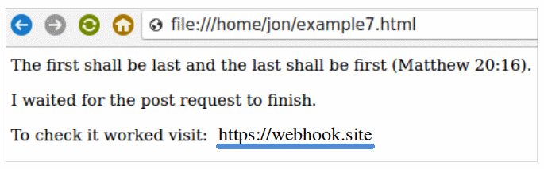
Keep clicking the browser refresh button, as in the above picture, and you will see new transfers in the webhook tab as they arrive.
You can see the text we sent in the "Raw Content" box. Note the "CORS Headers" checkbox which needs to be clicked with Chrome.
In the previous example we used the fetch method to post data to a remote server. In this example we will do the same but we will also get the response from the server and display it in an inline frame, or iframe. Iframes are very useful for displaying data from a server in the current webpage, otherwise the response would automatically appear in a new browser tab. Anyway, firstly we need to visit webhook and set up temporary URL as before. However, this time we also need to set a server response which can be done by clicking the Edit button, shown by a red arrow in the figure below, and entering some text for the "Response body".
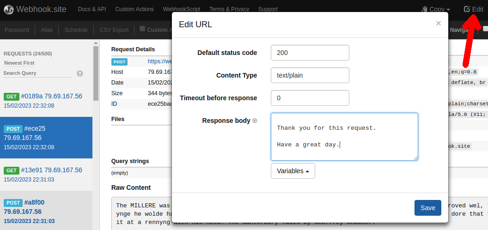
We also need to copy and paste the temporary URL into the script, as shown below.
<html><head><title>Chaining server requests</title></head><body>
<legend>Reply from server:</legend>
<iframe id="info1" name="info1"></iframe> <!--This is an html comment. Note iframe needs name AND id equal. -->
<div id="info2"></div>
<script src='fengari_web.js' type="text/javascript" async></script>
<script type="application/lua" async>
local js=require "js" local window=js.global local document=window.document
fetchObject=js.new(window.FormData)
fetchObject.method="POST"
fetchObject.body="The MILLERE was a stout carl for the nones; Ful byg he was of brawn and eek of bones- That proved wel, for over al ther he cam At wrastlynge he wolde have alwey the ram. He was short-sholdred, brood, a thikke knarre, Ther was no dore that he nolde heve of harre, Or breke it at a rennyng with his heed. The Canterbury Tales by Geoffrey Chaucer."
serverURL="https://webhook.site/6e3bbc0d-c108-4e37-bb72-e44caf972b86" -- copy and paste the URL from webhook
fetchpromise=window:fetch(serverURL,fetchObject)
fetchpromise["then"](fetchpromise, function() post_completed() end) --override lua's own then command
function post_completed()
myDownload=document:getElementById("info1")
myDownload.src=serverURL
myDownload.onload=function() get_completed() end
end
function get_completed()
document:getElementById("info2").innerHTML="To see the POST and GET requests visit: https://webhook.site"
end
</script></body></html>
After the data are sent to the server using the fetch promise, a function is called to get the server reply using the iframe's src (source) method. Then when the iframe is fully loaded, its onload method is used to call the final function in the script. An explanation of these steps is given below.
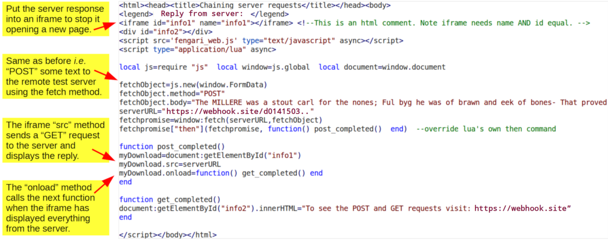
You should be able to confirm that everything appears in the web page in the right time sequence. The legend and the empty iframe appear first, then the server message eventually arrives in the iframe followed almost instantly by the final message at the bottom of the page.
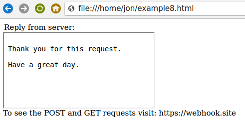
If you look at the webhook site which you created for this exercise, you should be able to see the POST and GET requests appearing on the on the left hand side of the page, as shown in the first screenshot in this section.
In this example the server has just sent a plain text message, but the normal situation would be for the server to send some html that would be displayed in the iframe. It is also possible for the server to send back a file and this could then be downloaded to the local disk by the client browser script, e.g. by using a truncated version of the save() method of Example 2. In this case there is no need to make a blob object, etc, since a.href can simply be set to the relative path and name of the desired file on the remote server (relative, that is, to the server script).
In the last two example scripts, if you were to delete all of the chaining commands, these small test cases would probably still work perfectly well. However, remember that we are transferring just a few lines of text but when large amounts of data ( e.g. megabytes) are being transferred, the use of "then" and "onload" methods is crucial to ensure everything proceeds in a synchronized way. I hope the last two examples give an idea of how asynchronous processes can be handled in a fengari web script.
If your script is a time-consuming one then it will help to inform the user that the calculation is progressing, more so than an hourglass might do on its own. This is an example of a way to code a progress bar which was sent to me by Daurnimator (the author of Fengari) which uses a co-routine - something I am not very familar with, but it does the job!! It does not seem to be possible to do this with the JS commands we have used up till now.
<html><head><title>Progress Bar</title></head><body>
<div><button id="run">Run</button></div>
<progress value="0" max="100" id="progress" style="width:100px;"></progress>
<script src='fengari_web.js' type="text/javascript" async></script>
<script type="application/lua" async>
local js = require "js"
local window = js.global
local document = window.document
submit=document:getElementById("run")
progbar=document:getElementById("progress")
function dom_yield()
co = coroutine.running()
window:setTimeout(function() coroutine.resume(co) end)
return coroutine.yield()
end
submit:addEventListener("click", function() coroutine.wrap(function()
for i=1,10^7 do
if i%10^6==0 then
local prog=math.floor(i/10^7*100)
progbar.value=tostring(prog)
dom_yield()
end
end
end)()
end)
</script></body></html>
Basically we have wrapped the time-consuming calculation (block at the end) in a co-routine and, at regular intervals, it is the co-routine dom_yield() (middle block) which updates the web page with the JS setTimeout() function.
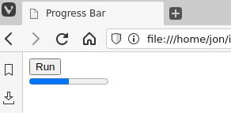
Footnote. After pondering this one subconsciously for several months, my pea-sized brain finally worked out a slightly shorter way of doing this that I actually understand and that is to use a recursion. In fact, the recursion calls itself with a javascript setTimeout() function. That seems to wake the progress bar up enough for it to work correctly.
<html><head><title>Progress Bar</title></head><body>
<div><button id="run">Run</button></div>
<progress value="0" max="100" id="progress" style="width:100px;"></progress>
<script src='fengari_web.js' type="text/javascript" async></script>
<script type="application/lua" async>
local js = require "js"
local window = js.global
local document = window.document
submit=document:getElementById("run")
progbar=document:getElementById("progress")
submit:addEventListener("click", function() slow_part(0) end)
function slow_part(j)
if j<=10 then
for k=1,10^6 do i=j*10^6+k end --generates all values of i up to 10^7
prog=math.floor(j/10*100)
progbar.value=tostring(prog)
window:setTimeout(function() slow_part(j+1) end, 0) --delay here is 0 msec
end
end
</script></body></html>
Since the original example generated all values of i up to 10 million, the code above does the equivalent calculation in chunks with a fairly clunky recursion. This particular calculation has to be done in chunks because there is a limit on the number of times a function can call itself in javascript.
During testing, it may be useful to calculate how long your script takes to run e.g. you can see how much faster it is to use local variables rather than globals, which is actually my preference for simplicity! To do this we can use the JS Date() function which returns a string such as "Tue Apr 02 2024 01:45:47 GMT+0100 (British Summer Time)" and from this we can use lua to extract the time in seconds at the start and end of the run.
<html><head><title>Run time calculator</title></head><body>
<div><button id="run">Run</button></div>
<div id="runtime"></div>
<script src='fengari_web.js' type="text/javascript" async></script>
<script type="application/lua" async>
local js = require "js"
local window = js.global
local document = window.document
function getTime()
timenow=window:Date()
hours=tonumber(timenow:sub(17,18))
mins=tonumber(timenow:sub(20,21))
secs=tonumber(timenow:sub(23,24))
time=hours*60*60+mins*60+secs
return(time)
end
document:getElementById("run"):addEventListener("click",
function()
startTime=getTime()
for i=1,10^7 do j=i end --slow step
endTime=getTime()
runTime=endTime-startTime
document:getElementById("runtime").innerHTML="<p>Run time: "..runTime.." sec."
end)
</script></body></html>
The lua getTime() function calculates the current time in seconds at the start and end of the run button's callback (bottom block) and the difference between these two numbers gives us the total run time.
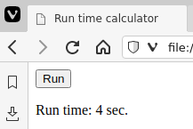
Note that this only gives you the time in seconds which is fine for slow scripts but to achieve greater precision you would need to make new Date() JS objects, as follows, at each point of interest in the program. This will give the current time in milliseconds (measured since 1 Jan 1970).
timenow=js.new(window.Date)
print("Time now:",timenow:getTime())
Subtracting the value for the startpoint from that of the endpoint, as before, will give the runtime in ms. Again, Daurnimator very kindly provided the information for this example.
In this example we will use the 2D graphics rendering library pixi.js which can be used for games, etc, and the gui library dat.GUI for controlling a simple animation. We render a picture file and display text on top of it, firstly by using html and secondly by using pixi to write the text onto the canvas for us.
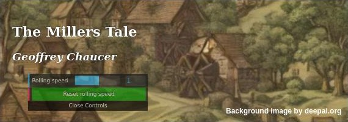
Pixi does things at the same time as fengari so we need to use promises to make sure that one waits for the other. In this example, the init_promise is where we have to wait for pixi to create the canvas before adding it to the web page that the browser is drawing. A bit further down is a second promise asset_promise where we have to wait for pixi to load the asset (a picture file) before it tries to draw it as a moving image or 'sprite'. In this case we call it a tilingSprite so that pixi repeats it like a wallpaper pattern. The sprite is then drawn on the pixi 'stage' and a 'ticker' function is started to roll it continuously in the y-direction, a bit like the credits at the end of a film.
We also make a simple dat GUI with a slider to control the animation speed and a button to reset the speed to its original value. There are callback functions which do this for us and another callback function is triggered by clicking on the pixi sprite which reverse the animation.
<html><title>Getting Started with PIXI</title>
<script src="https://pixijs.download/release/pixi.js"></script>
<script src="https://cdnjs.cloudflare.com/ajax/libs/dat-gui/0.7.9/dat.gui.min.js"></script>
<script src="fengari_web.js" type="text/javascript" async></script>
<div style="position:absolute; color:white; padding: 20px; text-shadow: 0px 0px 2px black;">
<h2>The Millers Tale</h2>
<h3><i>Geoffrey Chaucer</i></h3>
<div id="myGui" style="opacity:0.7; transform:scale(0.8);"></div>
</div>
<script type="application/lua"> --Put script at end, i.e. just before </html> so page loads fully before script starts.
local js=require('js') local window=js.global local document=window.document
app=js.new(window.PIXI.Application)
gui=js.new(window.dat.GUI)
document:getElementById('myGui'):appendChild(gui.domElement)
background=js.new(window.Object)
background.backgroundAlpha=0
background.width=570
background.height=200 --image is 570 x 1101 pixels so we are just showing part of it
init_promise=app:init(background)
init_promise["then"](init_promise, function() document.body:appendChild(app.canvas) end) --override lua's own then command
slider=js.new(window.Object)
slider.speed=1
gui:add(slider,"speed",-20,20):name("Rolling speed"):onFinishChange(function() print(slider.speed) end):listen()
button=js.new(window.Object)
button.reset=function() slider.speed=1 print(slider.speed) end
gui:add(button,"reset"):name("<center style=\"background-color:green;\">Reset rolling speed</center>")
asset_promise=window.PIXI.Assets:load('millere.jpg')
asset_promise["then"](asset_promise, function() sprite=window.PIXI.TilingSprite:from('millere.jpg')
sprite.eventMode="static"
sprite:on("click", function() slider.speed=-slider.speed end)
app.stage:addChild(sprite)
sprite.tilePosition.y=-200
roll()
end )
function roll() app.ticker:add(function() sprite.tilePosition.y=sprite.tilePosition.y-0.1*slider.speed end) end
pixitext=js.new(window.PIXI.Text)
pixitext.text="Background image by deepai.org"
pixitext.position.x=370
pixitext.position.y=174
pixitext.zIndex=2
pixitext.style.fontSize=12
pixitext.style.fill="white"
pixitext.style.fontWeight="bolder"
app.stage:addChild(pixitext)
</script></html>
Important note. In order for the script to load a local file, e.g. the picture file that we are going to animate, you will need to have a local web server running. This is because the web page is asking the browser to load a specific local file without giving the user the opportunity to select which file to use, and that is a security risk. When the html file is on a server, there is no security risk in it reading another file on the same server. Hence we need to make a local fake server on our own computer. On linux this is quite easy because we can use busybox which may be installed already, but if not you can get it with your package manager. In a terminal window in the folder where the example11.html file is, type:
busybox httpd -f -vv -p 2020
and make your browser look at the following URL:
http://localhost:2020/example11.html
Everything should now work perfectly. There are some tutorials on the web about doing the same thing on Windows, etc. I tried and found the following works if you download a windows binary for busybox to your folder:
busybox httpd -fvv
Then the following should work:
http://localhost/example11.html
Here, the file is being delivered on port 80 (whatever that means) by default. In the previous example, we used port 2020, but if we choose our own port number, it can be pretty much any integer >= 1024, e.g. 8080 is commonly used for ease of typing, I think.
The text is a bit small in the figure below, but I hope it explains what is going on.
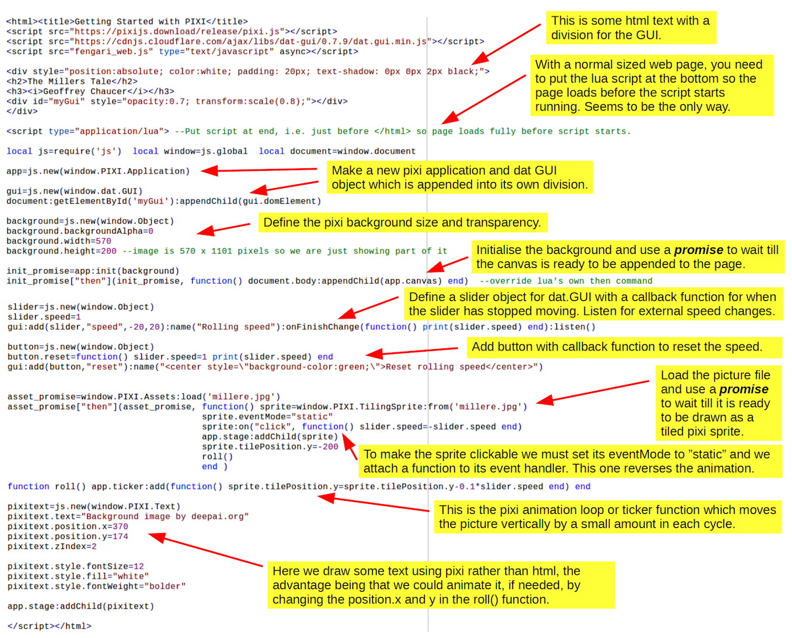
One final point is that if the script needs to wait for the page to load before it starts running (as in this example), in theory, it should be possible to do this by using the "defer" attribute instead of "async", but this never seems to work properly, for me anyway! The only way which seems to work is to put the script below all of the html, etc, as in this example.
The files used in the examples above can be obtained as a zip file here .
This is very much a guide for beginners by a beginner so it will be nowhere near perfect.
Please do let me know of any typos, errors and omissions, via jbcooper_at_fastmail_dot_net.
Things which I still do not really understand (sorry) and should be looked at in future are:
Daurnimator (the author of Fengari) for much help on numerous occasions.
I am also very grateful to Kartik Agaram for pointing out an improvement which can be applied to all the examples here, but for simplicity and to save face (!), I have only described it in Examples 1 and 2.
I am grateful to nadmaximus on the lua reddit forum for posting lots of excellent advice and examples on pixi.js which features in Example 11 and is something that I would probably have never looked at otherwise.